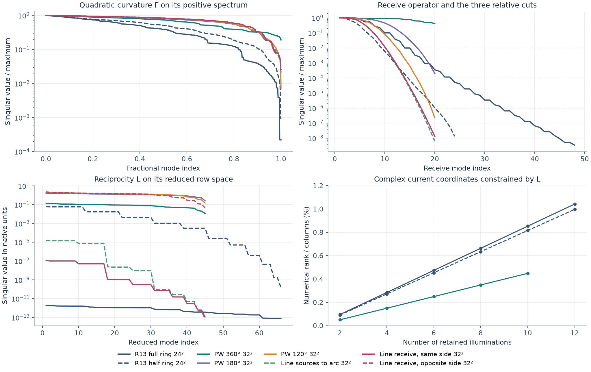
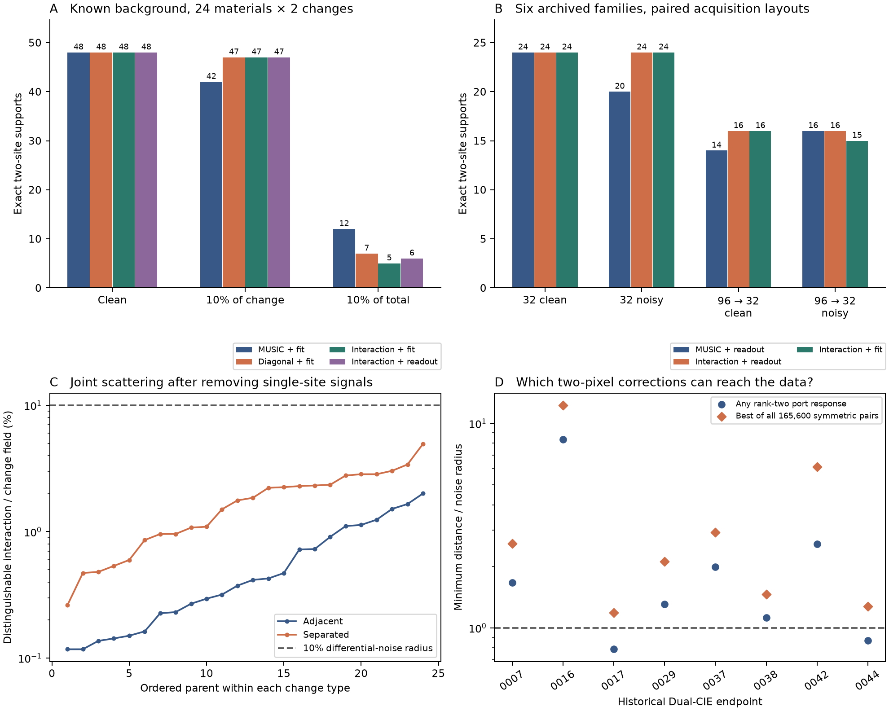
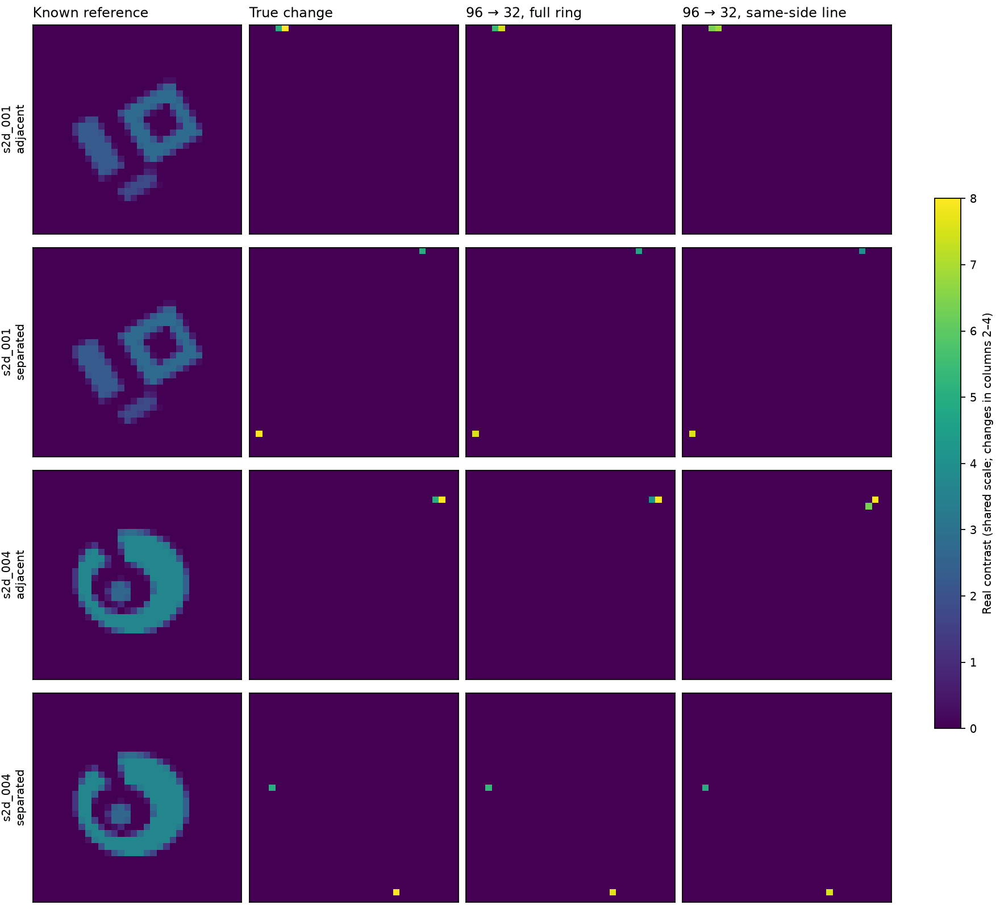

把非线性投影掉以后，还能知道多少材料？
HC-CIE-R2 的结论是，完整投影没有给高对比度全图成像带来可用的降维。最有价值的进展在另一个方向：给定当前材料，原始收发数据可以证明，即使允许任选两个格、任意改变其材料，也无法把某些错误重建修进噪声球。 在另有已知参考介质的变化监测中，同一公式还能定位并直接读出两个未知改变。当噪声接近弱交互本身，或者阵列看不到一侧的变化时，这项能力会消失。数学证明 · 逐案结果
1 消掉了什么，又留下了什么
在二维 TM 中，一个格内所有照明共享材料，故电流行与总场行平行。外积为零把这个条件写成方程。若将已知端口所不能确定的电流记为 \(NZ\)，方程的二次项总落入一个只由接收零空间和内部 Green 算子确定的空间 \(\operatorname{ran}\Gamma_N\)。Pro 的固定投影精确消去这部分。五圆盘中，投影后的四个复方程刚好确定四个未知复数。32 个随机同秩投影各自引入了一个额外辅助根。这个小模型确实利用了结构。小模型、对照与证书
大网格的几何解释很直接。两个格之间的相互作用在两个格的外积方程里符号相反，逐格相加便消失。在一般互易有限矩阵中，我们证明曲率秩泛型达到 \(\min(n-1,\binom d2)\)，其中 \(d\) 是暗电流空间维数。只剩常数左核时，所有线性信息都来自跨源互易性，其奇异值完全由 \(N^TB\) 决定。互换源和接收器看起来几乎相同的全环布置，恰是这些行可能最弱的地方。证明中的泛型矩阵类比 Hankel 物理几何更宽。秩的构造证明与剩余全谱
实测了 21 份项目存档仿真观测，来自 10 个独立材料，含满环、半环、120° 窗、弧阵及同侧和对侧线阵。39 次不同的曲率分解都只有常数左核，最小正 Gram 特征值与计算误差界的最小比为 15.12。下面的分子是最多可约束的复方向；绝对噪声尺度还会进一步减少它。
| 网格、照明 × 接收 | 曲率秩 | 投影后最多约束 / 暗坐标 | 互易算子最大奇异值 |
|---|---|---|---|
| 24² 全环，12×48 | 575 | 66 / 6336，1.04% | \(1.94\times10^{-12}\) |
| 24² 半环，12×24 | 575 | 66 / 6624，1.00% | 0.0611 |
| 32² 全环，10×20 | 1023 | 45 / 10040，0.45% | 0.135 |
| 32² 同侧 / 对侧线阵，10×20 | 1023 / 1023 | 各 45 / 10040 | \(1.14\times10^{-7}\) / 2.246 |

同侧与对侧线阵的曲率谱相同，余下线性信号却差约两千万倍。保持接收阵、改变照明就能制造这个反例。只检查 \(\Gamma_N\) 的奇异值无法判断材料是否可恢复。谱表及误差尺度
进一步把接收噪声精确传播至投影方程的右端，保留源对之间的噪声相关。公开参考电流范数的 1%、10%、100% 分别作为暗电流扰动幅度，零和该扰动各容许一个噪声球，要求两者仍可分开。R13 半环将接收谱截到最大奇异值的 1% 后，分别有 8、25、45 个方向可分，占 6,804 个暗坐标的 0.118%、0.367%、0.661%。锁定所有接收模时三档均为零。R13 全环及 SRAP 同侧线阵也都是零，SRAP 半环截断后为 6、26、41。这个有效秩给出了规定电流幅度下可分辨的方向数，合法材料能沿这些方向走多远仍是另一问题。传播协方差、绝对门和完整计数
2 利用真实材料能否挽回信息
合法实介质除外积为零外，还满足逐格实性与材料区间。一个总场全为零的格必须有零电流，这些照明对该格的比例没有读出能力。既有 Z-ALG 已利用功率和扇区条件排除材料。本轮具体问，能否从这些条件提取噪声以上、几乎线性且实际有益的方程。
在部分投影中保留完整二次余项，先得到 99 个同时通过电流端口球与互易性检验的候选。将它们读回合法材料、重解 Maxwell 后，最好的残差仍为 2.20δ。为检验这是否只是起点差，又从真实材料的 0.883δ 合格端点出发，并测试两个同样在球内的扰动。消元后，三个候选的二次项/线性项为 0.958–0.971，读回材料后残差为 2.100–2.104δ。即使在已合格物理解附近，最弱一半曲率方向内的二次项也足以影响材料。物理扰动、暗电流与余项
换用实材料的光学方程给了第二个机会。对等面积圆盘离散，\(\operatorname{Im}_H G\) 是全角远场的 Gram 矩阵。我们给出一个条件不等式，连接暗电流的辐射强度与实性方程所能留下的入射信号。24² 全环实际光学线性系数约为入射算子范数的 \(1.54\times10^{-11}\)，半环另一个实际几何为 0.562。六个历史材料上完成 36 个前端与校正配对。两全环无有用新增行，四半环只看前端有两例轻微改善，给各臂相同六步物理校正后，实权相对单用互易性 0/4 改善材料，中位 NRMSE 增加 0.00214。权重带来的功率约束可以测到，转成材料方向后的效果却弱。实权研究 · 前端逐项对照 · 辐射强度
原 Pro 的坏点有些在读回时违反无损实材料合同。施加合法盒避开了这些特定坏点。独立区间计算进一步证明，同一五圆盘几何的直接实材料全波目标另有一个严格内部局部极小，材料相对误差 32.42%，端口相对误差仅 0.6764%，真材料误差为零。该证书包含圆盘 Hankel 离散系数与其生成的读数。消除辅助变量仍会留下真实非凸性。区间与浮点合同
3 更有用的结构来自两件真实材料之差
给定参考材料 \(m_0\)，令 \(I\) 为真正改变的格子。端口差精确写作 \(O_I T U_I\)，其中 \(U_I\) 是参考材料内的总场，\(O_I\) 把当地电流送至实际接收器，\(T\) 保留背景与改变格之间的全部多次散射。新增的关联是，两个格的同一个交互系数同时出现在内部二次外积的正负两项，以及端口中跨格的交叉信号里。未改变格的有限电流和场可以很大，两者的外积仍严格为零。物理割线恒等式
对两个未知索引 \(i,j\)，它们可产生的端口差必落在三个已知端口图样的跨度内。即便把三个系数放开为任意复数，只要观测残差与每一个这样的跨度相距都超过 \(\delta\)，原数据就排除了全部两格修复。这项判断只需当前材料、原观测、噪声球与背景物理。普通的小支撑 Woodbury 响应与稀疏强散射有效源法均有先例。先例与贡献边界
在 R13 的 48 件材料、每件五个历史端点上，先用端口奇异值给出所需改变格数的下界。在八个指定 Dual-CIE 端点又扫完各自 165,600 种位置对。八案都能排除。最有信息的是 0017 和 0044：普通二阶端口秩界只有 0.786δ 和 0.868δ，无法排除；加入必须由同一对位置产生收、发信号的条件，保守有限精度下界升到 1.1863δ 和 1.2705δ。0017 是跨网格案例，数字针对存档粗网格及原球半径。这个结果回答一次改任意两格能做到什么，不能判定一个同时带动很多格的单参数事件无效。全对枚举、两案独立下界

4 从成熟算法错解出发，能否恢复完整目标
用十件已曝光的二维困难及对照材料，保留同一观测、先验、材料端点及完整 Maxwell 审计。第一版 60 臂以物理下降提名，第二版在打开材料评分前取消跳点必须先下降的限制，加入精确双块互散射，再在四类起点重做 280 臂。每臂追加同样的 2 CPU 秒，原端点取得费用单列。在五个历史共败物体的 20 个端点上，平均材料 NRMSE 分别为精确双块 0.53197、一阶 Born 双块 0.53199、普通续跑 0.53211、随机双块 0.53181、普通重启 0.52213。精确双块相对续跑的按物体配对差为 −0.000133，95% 重采样区间为 [−0.000361,+0.000120]。全部 40 个端点中原有七个材料合格解保住，33 个原未合格端点没有新增通过。每次送审的有限联合响应和完整正演一致到 \(\Phi\) 最大绝对差 \(9.03\times10^{-17}\)。原始指标、计算前缀和实际费用
用实际墙钟再取五个时间前缀。对审计已返回而候选入池时刻不确定的条目，分别算最早与保守可用的结果。2 秒时，五物体等权、允许各任务在两个选根之间变化，精确双块相对续跑的 NRMSE 差仍仅在 −0.000068 至 −0.000050 之间；与 Born 双块的差可跨零。五个墙钟档均未出现新增材料恢复。同起点的墙钟曲线

从同色标图可以看出问题的空间位置。已有 A-material 在开发弯条 7b8d 上保住连贯弧形，普通 CIE 只剩分散的局部亮区。新搜索没有从对应坏端点补齐弧形。0007 上主结构在多种提名后仍破碎。改进数据残差或某些背景格的幅度，不能解释为找回前景。这也保留了旧 A-material 的真实正例。弯条共用色标 · 0007 共用色标 · 前景、背景、SSIM、PR 与连接性


为检查是不是两块太局部，又计算完整材料 Hessian，自由面上按真实曲率、GN 和随机方向采取相同的有限步，再共同精修。五个共败 CIE 起点都有负曲率，而且小步的真实物理对称差分兑现了负号。步长扩大、遇到盒边以后，48 个所测的负曲率有限候选全部抬高原目标。已恢复的材料也能有负曲率。实际障碍包括合法可走距离和方向与大尺度结构的配合，仅凭一个负特征值不能指认错误盆地。活动面、方向、原端口和有限步
5 哪里确实可以直接读出材料
有独立已知的参考介质和“至多两个位置改变”的先验时，问题本身更有利。先由端口为位置提名，在每个假设支撑上反解小型等效源，再将全部照明共享的实材料比例直接读出，最后完整正演选择。这个前端在二维匹配网格的 24 个背景、48 种改变中，差分信号 10% 噪声下找对两格 47/48。同一候选数量的单格字典加精确拟合也是 47/48，普通两侧 MUSIC 前两名为 42/48。加入交叉原子没有带来额外定位收益。直接读出在两批实测中的在线中位耗时约 0.039 秒，内层非线性拟合约 0.110 秒，两者另有相同类型的背景准备；任务仅限已知背景监测。算法、分组统计及费用
为什么强相互作用没有帮助排序？把交叉信号沿着两个单格信号投影后，可单独测量的那部分仅占整个变化信号的中位 0.395%（相邻）或 1.81%（相隔）。48 例都小于 10%。把噪声改按总散射场的 10% 给定，闭式臂只定位 6/48，另找到了七个仅改一格且合法、也能解释同一个带噪观测的竞争材料。原始可见性及合法替代
| 验证条件 | 定位结果 | 这个对照说明什么 |
|---|---|---|
| 二维 96²→32²，10% 差场，六个背景各两种变化 | 四对候选闭式读出，全环 11/12，同侧线阵 5/12 | 变化前后相减消去固定背景偏差，未消去源和接收场的离散误差。 |
| 三维 12³，双极化，10% 差场，四个背景 | 未知位置字典，半球 4/4，平面 0/4 | 噪声谱范数是第六个真信号奇异值的 0.33–0.50 倍或 13–123 倍。 |
| 同一三维平面阵，无噪声 | 普通提名 0/4，改用收发两侧子空间 4/4 | 可恢复的信号确实存在，干净平面阵的失败可定位到提名步骤。 |
| 同一三维，10% 总散射噪声 | 两阵八个位置对全错，八个候选却全部在原球内 | 出现另一种合法材料解释同一实际观测。 |
三维使用双极化、三分量 dyadic Maxwell 和逐体素共享的实标量，改变量监测试验为匹配网格。00 号的三个切片上，半球差场臂追到真实正、负变化的位置；总场噪声下甚至产生达到材料上界的异位亮点。平面阵干净资料经两侧修正能恢复这对位置。该比较没有把已知背景的庞大体积当作正确定位的得分。三维原图及各阵列数据 · 独立网格变化图


6 经典对象与真正的测量
三组 Austria 观测沿用原 150²→32² 和 10% 噪声，从已运行的 Paper-NIE 及 Dual-CIE 端点做同状态分叉。六个端点的直接物理续跑都降低端口误差、提高材料相对 L2 误差。两格修正也未补出新的 Austria 结构。另一组 SRAP 六件原材料上独立复算了细网数据，12 个布置中的粗化真材料都在原观测球外，其中 11 个的干净离散偏差已大于所加噪声。经典端点 · 四种网格与噪声条件
Institut Fresnel 的 FoamTwinDielTM 使用原 8 GHz 数据、逐源缺测掩码与标定。从 13 源 3,133 个训练端口选材，再预测完整留出的 5 源 1,205 个端口。从 NIE 出发，两格与同实际前缀续跑的留出误差为 0.597976 / 0.598051；从 Dual-CIE 出发则为 0.501237 / 0.500680，把共同可用的 4 CPU 秒用于续跑可降至 0.457328。这个实物没有逐格真值。现场证据支持继续优化该端点的测量预测，没有为新结构提供额外成像优势。原测量核对和费用
7 科学裁决与投稿价值
| 类别 | 目前可以承担的主张 |
|---|---|
| A 有证明的数学结果 | 有限对称算子的曲率泛型秩、常数左核时剩余信息全谱、物理割线外积局域式、两个改变格的内外交互系数与条件可见性。具体有限圆盘几何中也认证了直接实材料错极小。全球新颖性仍需针对性比对。 |
| B 有实际物理计算支持 | 八个真实存档端点的全位置对必要排除。对两个普通秩界无法决定的端点，独立浮点误差控制仍排除。已知背景下，换阵列或噪声合同能把同一两格变化从容易找到变成定位失败。 |
| C 值得检验的解释 | 难端点需要较大区域协同；能看见的协同动作可能由参考总场和接收传输共同限定。像素数下界不能给出独立非凸变量数，也没有确定通用低维核心。 |
| D 数学成立、成像用途受限 | 完整曲率投影；忽略弱余项的近似前端；冻结支撑下的便宜条件读出；低秩反馈内层充分条件。后两项各自依赖额外支撑/尾部假设。 |
| E 受反例限制或已有先例 | 稳定正演即全局可辨识、负曲率即可跨盆地、弱谱即弱物理余项、强内耦合即可从端口测出，这些推论均有反例。电流零空间、共享材料消元、MUSIC、Woodbury 及有效源读出已有先例。 |
投稿判断。 对 IEEE TAP、TCI 或 TGRS 的整图反演算法稿，本轮没有在同成本成熟 CIE/NIE 上取得可重复的新增恢复。对 Inverse Problems 或 SIAM JIS，最值得单独写的是有限孔径下能消去多少非线性，以及数据能排除多大范围的材料修复。最强证据是有限几何反例、闭式谱和真正遍历全部位置的可达性下界。最严重的缺口是这种下界目前主要给出“哪些修补不可能”，还不能从未知目标端口指明“应在哪一片区域协同改变”。最有区分力的下一项工作，是给小片连续支撑或多体块的端口距离一个可计算下界，同时构造在同一观测内真的可行的匹配上界，再考察宽频或新照明能否缩小两者之差。下一步的可证伪命题 · 先例审查 · 复现与下载